MAE 341 Space Flight
Cislunar mission analysis
Model an Artemis downlink, then go outside and check the model
Three assignments that build on each other: ISS observation, an STK exercise set across orbital regimes, then an Artemis I replication extended with a downlink study. Prof. Edgar Choueiri.
Replicate a flown lunar mission in STK/Astrogator and ask an operational question of it — then spend three nights measuring the ISS by eye to find out whether orbital analysis predicts the sky above New Jersey.
Modeling Artemis I
One Astrogator Mission Control Sequence for Orion, blocked by flight phase instead of run as a single propagation — so every leg is debuggable on its own.
First guess establishes a feasible translunar departure, with B-plane targeting through the differential corrector and stops on encounter and lunar periapsis. Lunar orbit insertion moves propagation into the Moon-centred frame; Hohmann-style apsis-to-apsis transfers raise Orion from low lunar orbit into a distant retrograde orbit. Propagators matched to regime: Earth high-precision, cislunar, then lunar.
The downlink question
Add an X-band transmitter on Orion and a receiver at Kennedy — and deliberately exclude the Deep Space Network, so the question becomes what one ground site can actually do.
Eighteen windows, 166.65 hours, 42.8% of the scenario. The spread matters more than the total: passes run from 7.45 minutes to just over 15 hours, so a scheduler can't assume a typical one. Worst-case geometry is ~440,000 km at low elevation, and Eb/No there is still about 19.75 dB.
So the link is access-limited, not power-limited — a scheduling problem, not an antenna problem. That converts straight into onboard requirements: storage sized to the worst gap, buffering, prioritized downlink. The same argument I'd later make from the other side on LUREX.
Checking it against the sky
Three nights of ISS passes, cross-checked across two apps and a web ephemeris, reduced three ways. The angular method gave 93.334 ± 0.088 min against 92.903 min from mean motion — inside about 0.5%.
The third method, timing between successive rises, came out at 98.08 min: 5.6% high. That's the useful result. Repeat-pass timing is sensitive to viewing geometry and the horizon threshold, both of which stretch the interval. Knowing which method fails, and why, beats the one that happened to land close.
Secondary products
The lighting report doubles as a geometry check: sparse shadows in cruise, then regular penumbra and umbra once Orion is cycling behind the Moon, clustering exactly where selenocentric radius is smallest.
SEET dose arrives almost entirely during Van Allen transit, then flattens — near 44 rad under the lightest shielding, a few rad under heavier. The trajectory isn't the driver here; the shielding assumption is. Worth knowing before quoting a dose number.
Where the model breaks
The return leg is the honest failure. Orion wasn't captured by Earth's sphere of influence, so propagation ends December 2 instead of the actual December 11 splashdown. Outbound and lunar phases hold up; the corridor home doesn't.
The rest is idealized in flattering ways. Impulsive burns, so no finite-burn pointing or gravity losses. Free-space propagation and ideal pointing, which is why modeled BER sits at zero — a real budget with coding, atmospheric loss, and pointing error wouldn't.
Next pass: fix the return corridor and propagate through entry, add a ΔV-by-event timeline, and put a DSN access case beside the KSC-only one so the single-station conclusion has something to be measured against.
Correction: an earlier write-up quoted the mean-motion period as 92.03 min. The correct value at 15.5 rev/day is 92.903 min. The ~0.5% agreement is unaffected.
Documentation
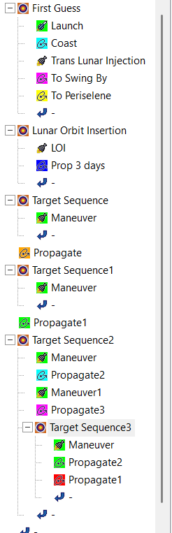
Drop file atassets/stk-mission-analysis/mcs-tree.png
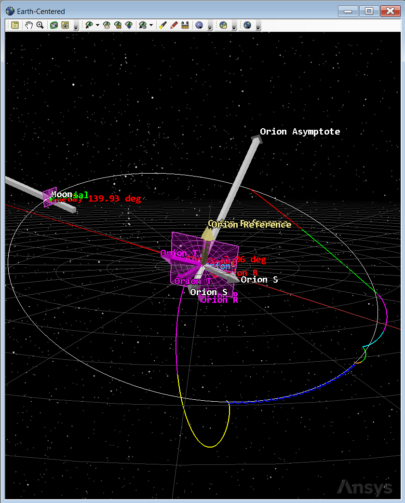
Drop file atassets/stk-mission-analysis/trajectory-earth.png
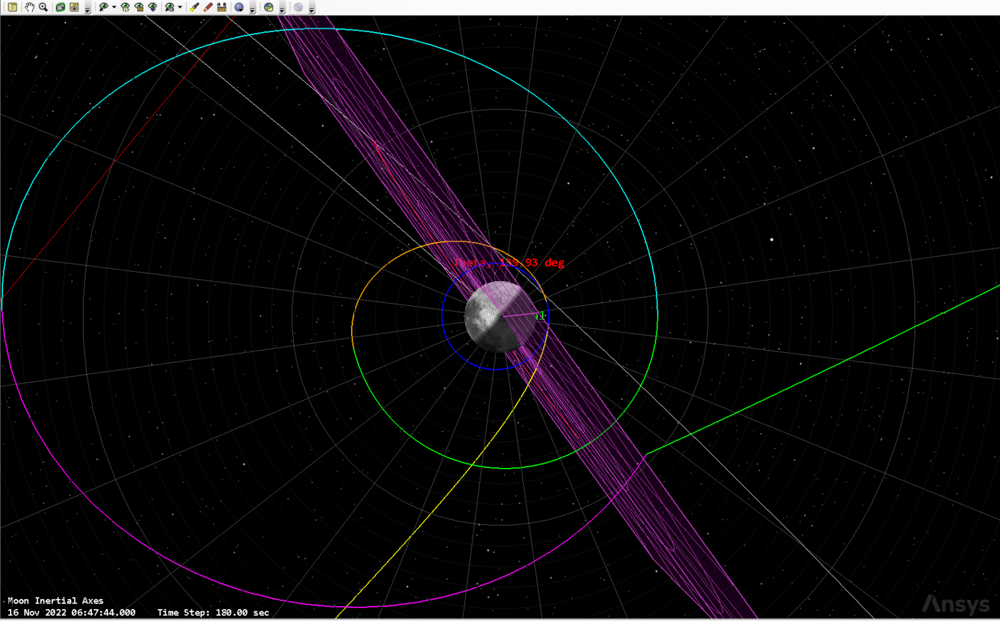
Drop file atassets/stk-mission-analysis/trajectory-moon.png
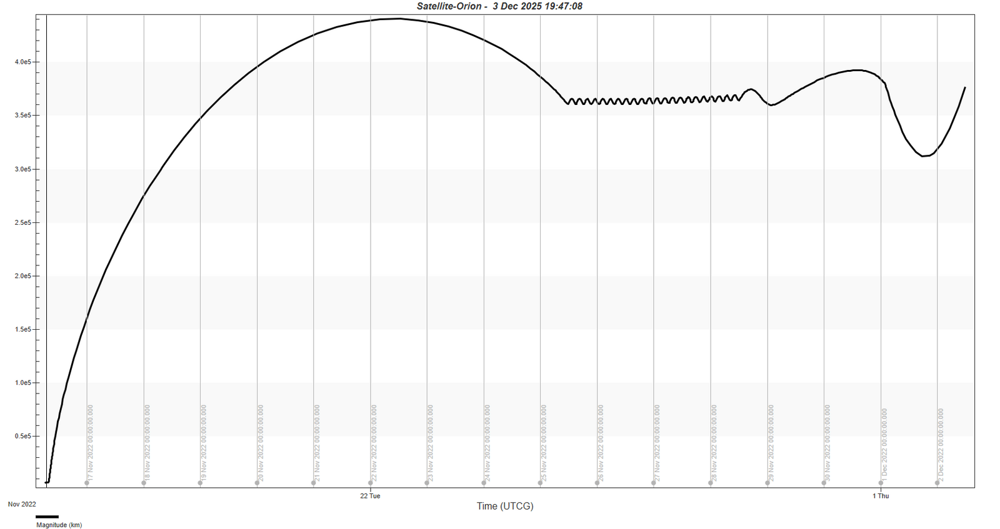
Drop file atassets/stk-mission-analysis/radius-earth.png
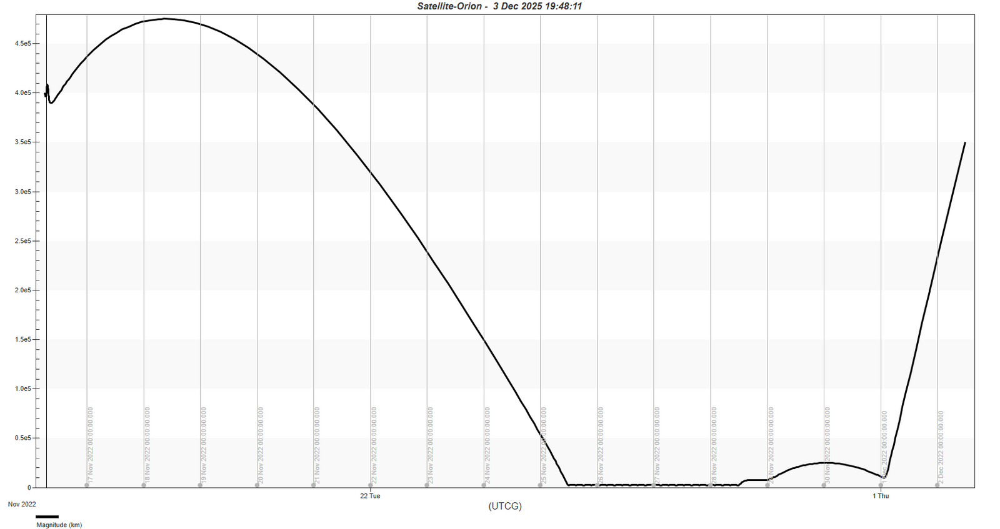
Drop file atassets/stk-mission-analysis/radius-moon.png
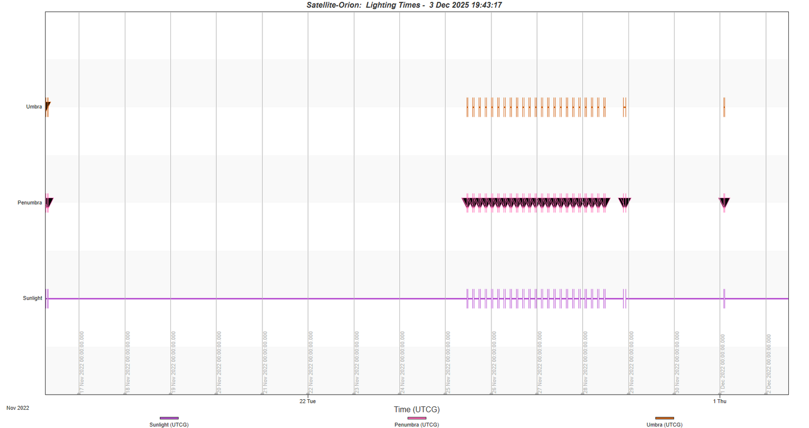
Drop file atassets/stk-mission-analysis/lighting.png
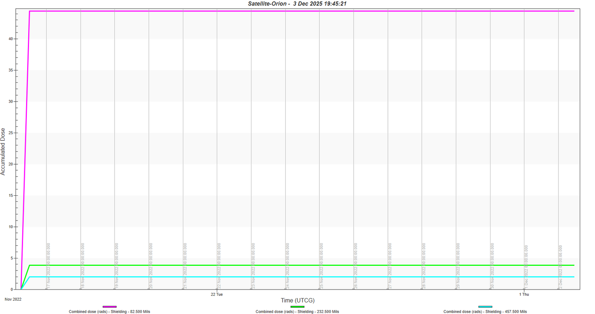
Drop file atassets/stk-mission-analysis/radiation-dose.png
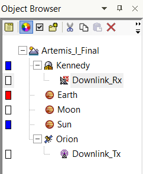
Drop file atassets/stk-mission-analysis/comms-objects.png
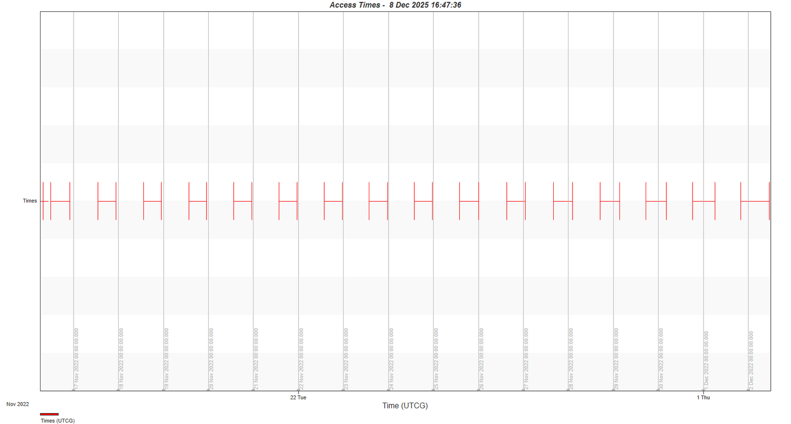
Drop file atassets/stk-mission-analysis/access-times.png
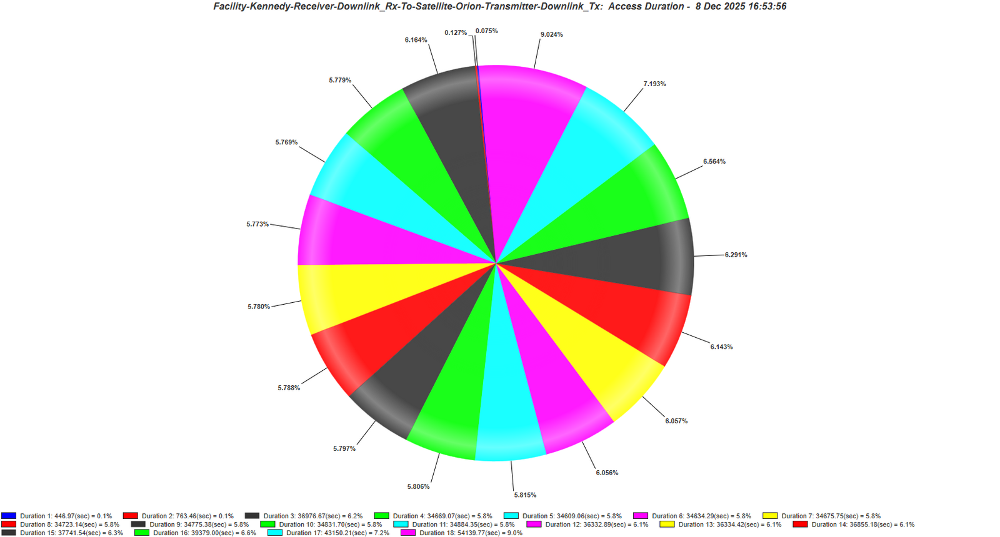
Drop file atassets/stk-mission-analysis/access-durations.png
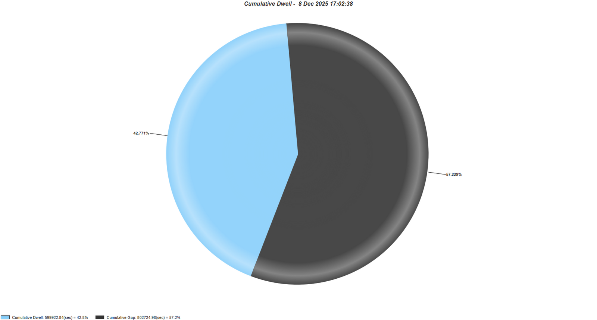
Drop file atassets/stk-mission-analysis/dwell-vs-gap.png
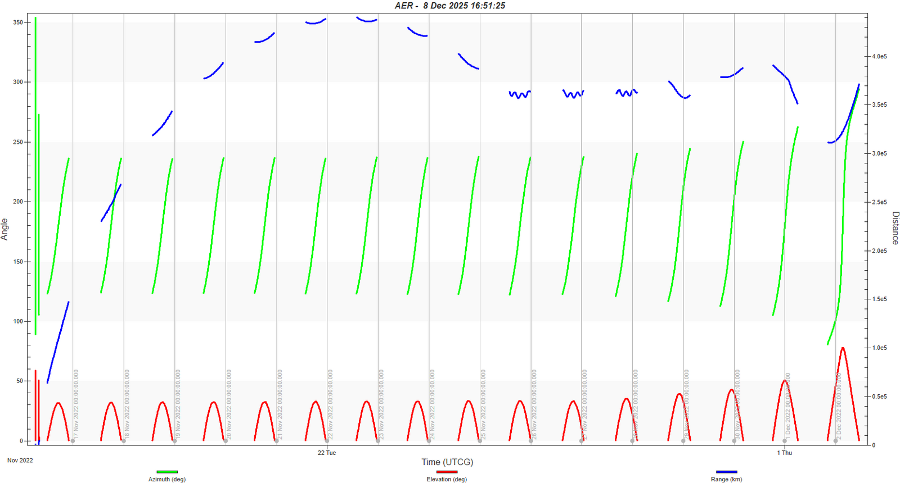
Drop file atassets/stk-mission-analysis/aer.png
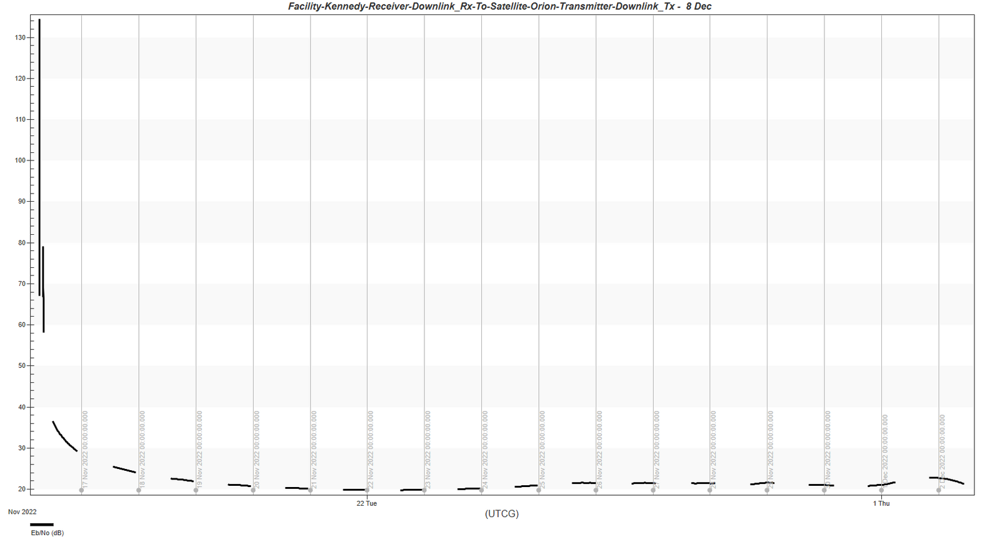
Drop file atassets/stk-mission-analysis/ebno.png
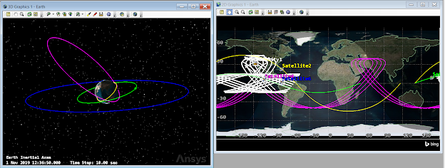
Drop file atassets/stk-mission-analysis/orbit-regimes.png
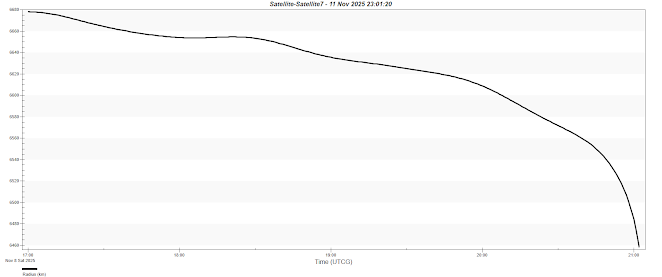
Drop file atassets/stk-mission-analysis/leo-decay.png
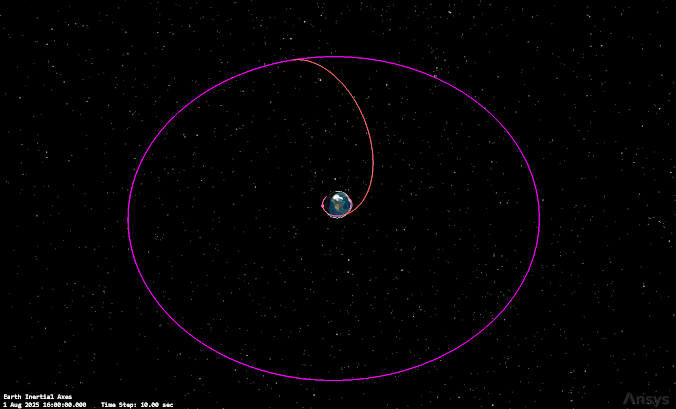
Drop file atassets/stk-mission-analysis/heo-molniya.png
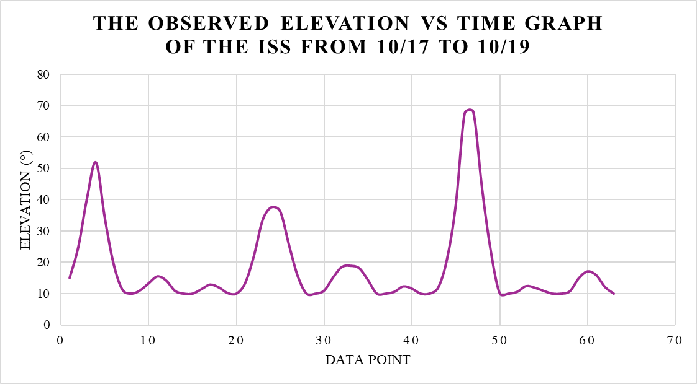
Drop file atassets/stk-mission-analysis/iss-elevation.png
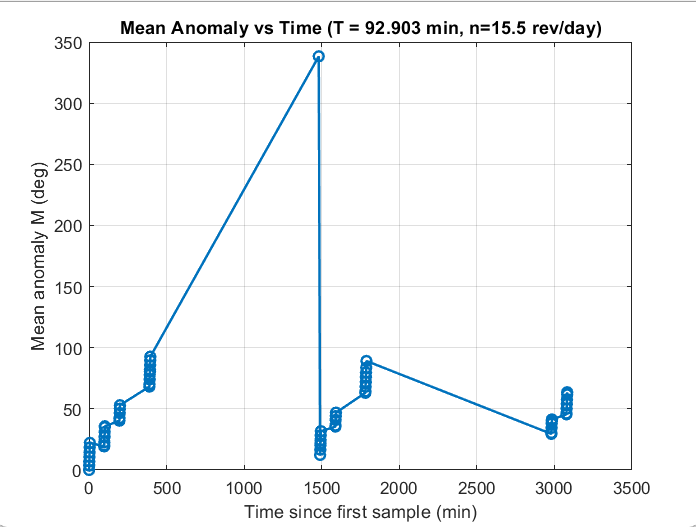
Drop file atassets/stk-mission-analysis/iss-mean-anomaly.png